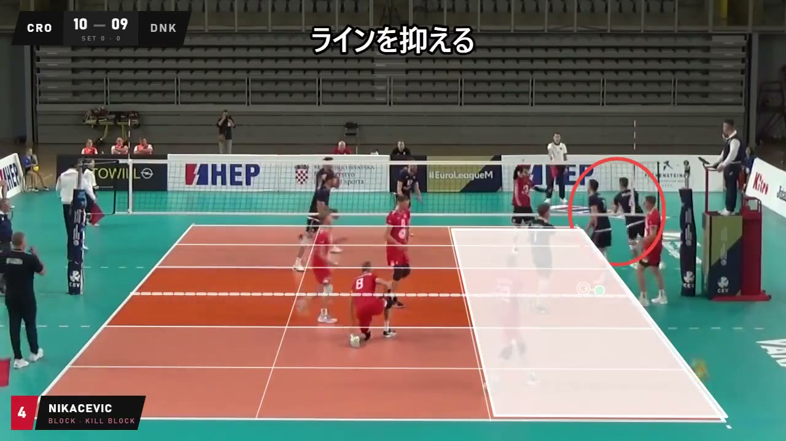
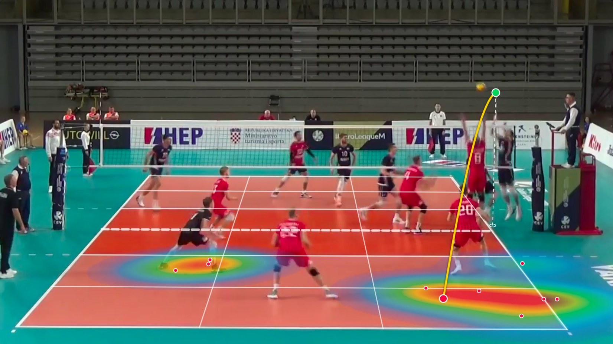
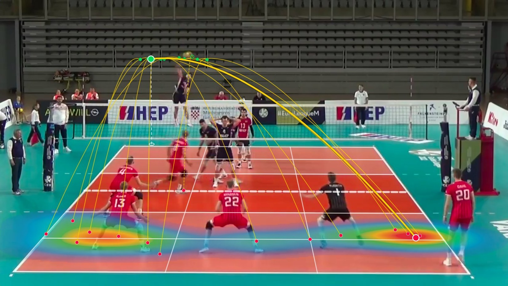
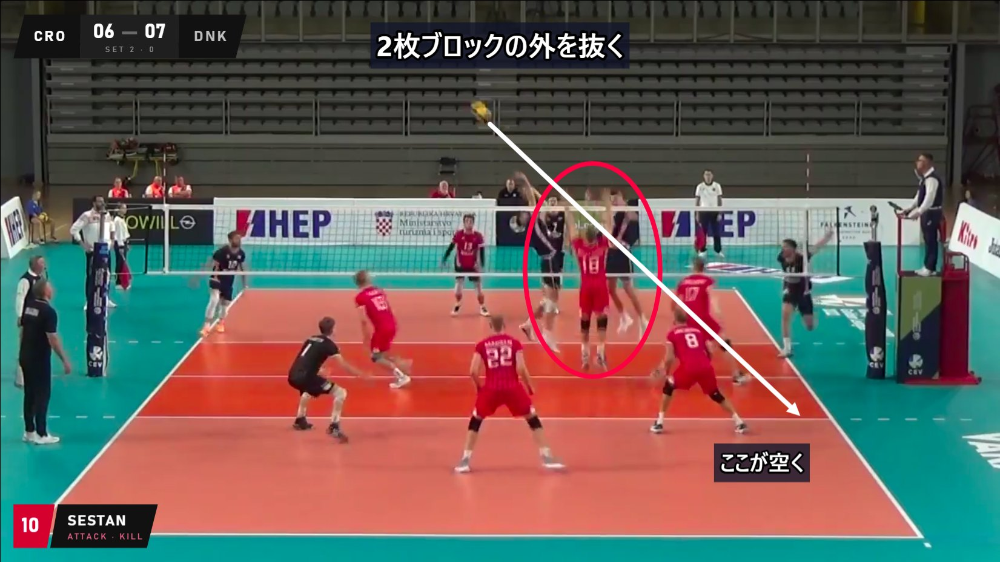
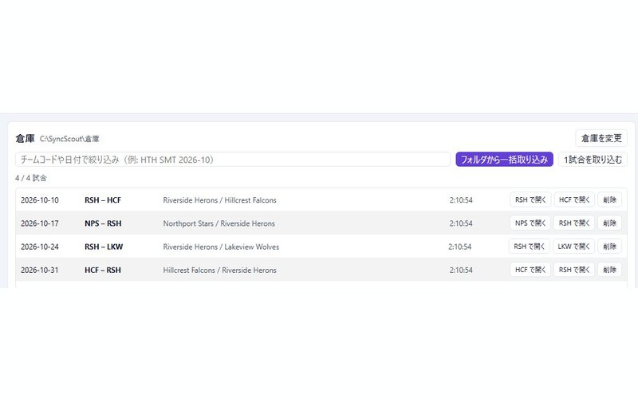
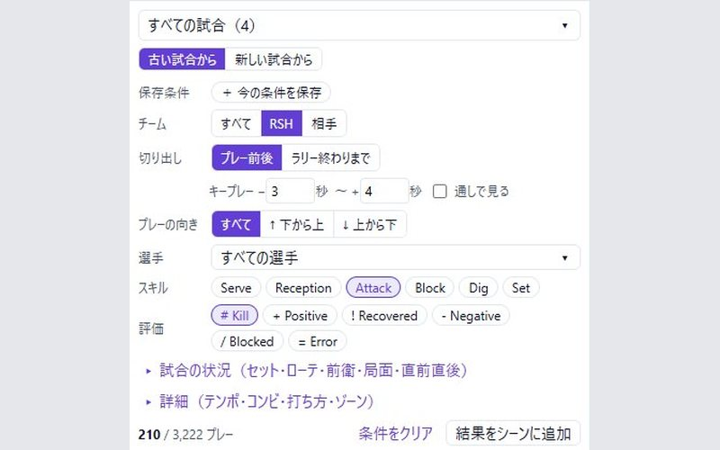
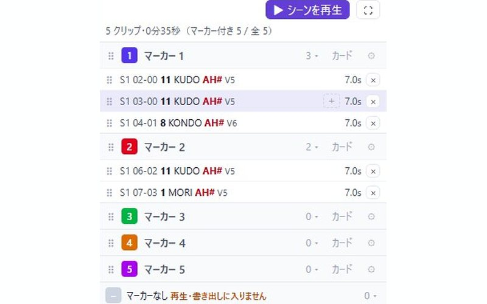
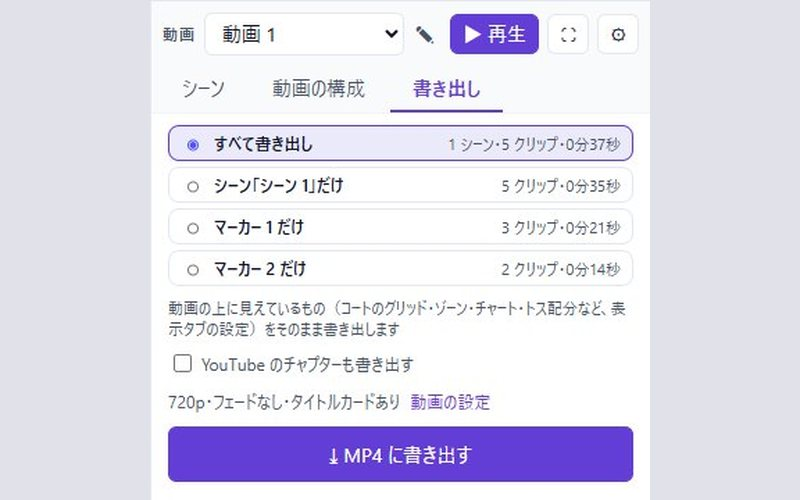
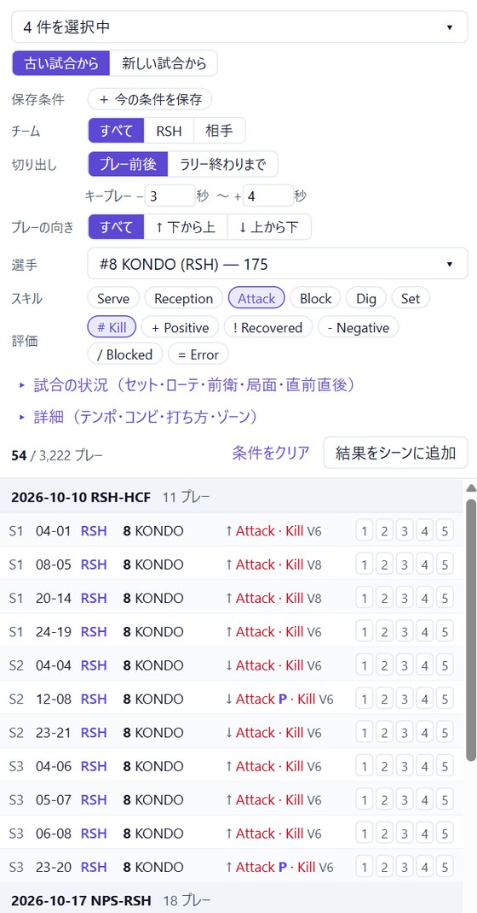
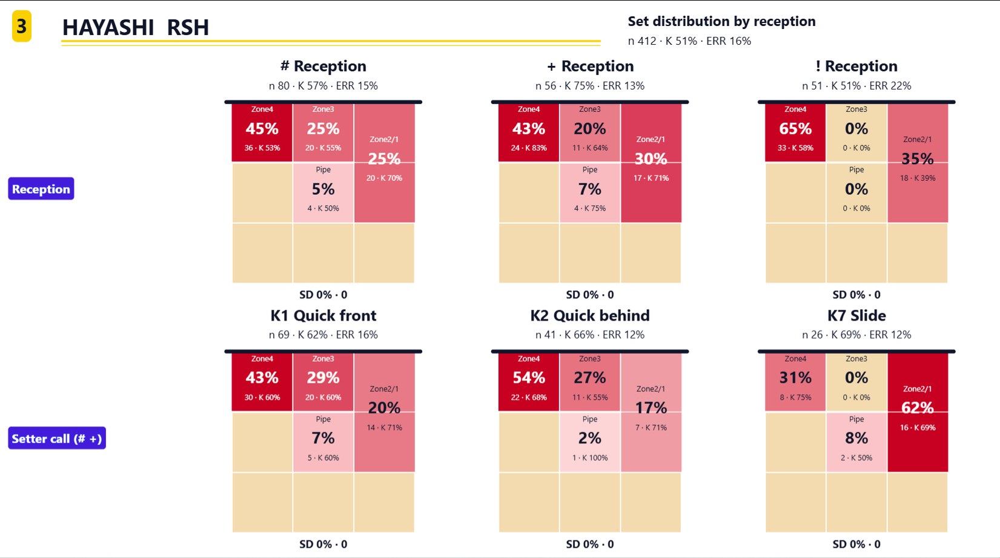

- 1動画を読む試合動画の 1 コマ。
- 2コートを探す四隅を見つけて、線に合わせる。
- 3データを描く点数・テロップ・打点。そして一言。
コートの上は、データが描く。
試合を開くと、アプリがコートを探して線に合わせます。あとはスカウトのデータが、点数やテロップ、打点や軌道になって映像の床に乗ります。





軌道はスカウトの座標から描く説明用の線で、実際のボールとは少しずれます。
口で補うより、映像に書く。
見出しを打ち、ブロックを丸で囲み、空いたコートを矢印で指す。見えているとおりに MP4 になります。


毎週の準備でも続けられる手間で。

読み込む試合動画と .dvw / .vsm を、フォルダごと自動で組に。
探す選手・スキル・ローテ・ゾーンで、全試合から絞り込み。
組むキー 1 つでシーンへ。プリセットなら動画 1 本まるごと。
見せるMP4・PDF・PowerPoint に書き出し。
数字から、映像へ。スライドへ。
レポートの数字をクリックすると、そのプレーだけが一覧に並びます。チームを選べば、ローテーションやセット配分のスライドをアプリが描きます。




1 チーム定額。
1 つの契約で、SyncScout と Video Editor をチーム全員が使えます。SyncScout をお使いのチームは追加料金なしです。
-
無料トライアル
14 日間
カード登録不要
- 書き出しを含む、すべての機能
- アプリでログインして始めます
-
月額
$5 / 月
1 チーム・人数無制限
- SyncScout と Video Editor
- いつでも解約可
-
年額 20% お得
$48 / 年
14 日間返金保証
- 月額の全機能
- 支払いは年 1 回だけ
- ログインしない場合
- 倉庫に入れられる試合は 1 試合まで。書き出しはできません。
- トライアルやプランが終わったら
- プロジェクトはそのまま開いて編集できます。取り込み・新しいプロジェクト・書き出しは、プランを選ぶと再開できます。
トライアル・支払いについて
トライアルは 1 アカウントにつき 1 回です。プランはアプリで選び、支払い画面はブラウザで開きます。価格は米ドル表示です。税金は所在地に応じてチェックアウト時に計算されます。決済は Stripe の Managed Payments が代行します。解約はチームの管理者か支払いをしている人がアプリのアカウント画面（「契約の管理・解約」）から行い、支払い済みの期間の終わりまで使えます。
自分の動画とスカウトファイルで試す
14 日間無料。使い方はマニュアルで。
お知らせ（11 月 26 日）Windows 版の 1.0.7 には、起動できない不具合がありました。1.0.7 に更新した方は、最新版をダウンロードして入れ直してください。設定とライブラリはそのまま残ります。
お使いの Mac が分からないときは、アップルメニューの「このMacについて」を開いてください。「チップ」が Apple M… なら Apple シリコン、「プロセッサ」が Intel なら Intel です。
Windows:「Windows によって PC が保護されました」と出たとき
アプリには有料の証明書による署名がないため、初回は Windows がインストーラーを止めることがあります。詳細情報を押し、実行を押してください。止められるのは最初の 1 回だけで、そのあとの新しい版はアプリの中で更新されます。
Mac: ターミナルから入れる（確認の画面なし）
アプリには Apple の署名がありません。ブラウザでダウンロードしたものを開くと、初回は macOS に止められます。そのときは「システム設定」→「プライバシーとセキュリティ」→「このまま開く」で開きます。この手間を省くには、ターミナル（「アプリケーション」→「ユーティリティ」）を開き、次の 1 行を貼り付けて Return を押してください。同じリリースからお使いの Mac 用の最新版をダウンロードし、「アプリケーション」に入れて開きます。
cd /tmp && a=$(uname -m | sed s/x86_64/x64/) && u=$(curl -fsSL "https://api.github.com/repos/courtendvb/syncscout-video-editor-releases/releases?per_page=30" | grep -o "https://[^\"]*-$a-mac.zip" | head -n 1) && curl -fL "$u" -o ssve.zip && rm -rf ssve && ditto -x -k ssve.zip ssve && rm -rf "/Applications/SyncScout Video Editor.app" && mv "ssve/SyncScout Video Editor.app" /Applications/ && open "/Applications/SyncScout Video Editor.app"新しい版はアプリの中でダウンロードされ、再起動すると入ります。Windows も Mac も同じです（Mac はアプリを「アプリケーション」に入れているとき）。